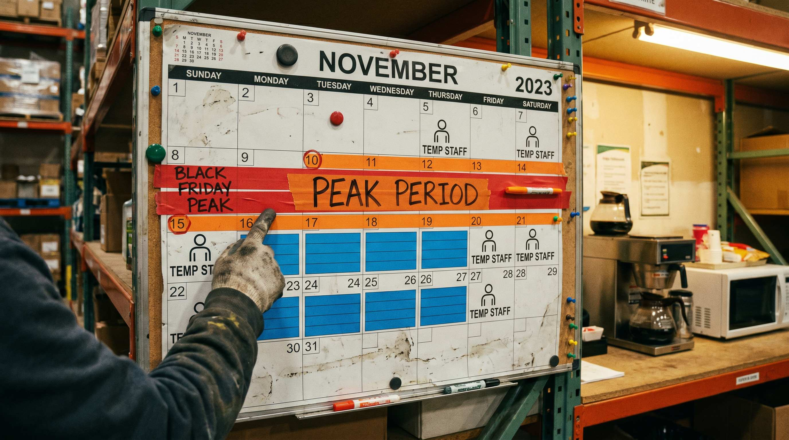

Et lager med sæsonudsving er ikke som alle andre arbejdspladser. I januar kan ni medarbejdere haandtere alle ordrer med god margin. I november kan de samme ni mennesker ikke engang haandtere halvdelen af volumen. Forskellen er ikke, at folk arbejder dårligere. Forskellen er, at virksomheden ikke planlagde for det, der altid sker.
Sæsonudsving rammer haard, fordi de er forudsigelige men alligevel overrasker. Black Friday, jul, valentinsdag, paaske, mors- og farsdag: disse datoer står i alle kalendre og alligevel ser vi hvert eneste år lagre, der går ned på knae i peak fordi vagtplanen ikke holdt.
Den gode nyhed er, at det lader sig løse. Det kræver bare at du planlaeggter vagtturneringen systematisk og ikke som en opgave du tager fat på, når peak allerede er over dig.
👉 SmartPack giver dig realtidsoverblik over kapacitet og ordreflow i peak. Se hvordan det virker her
Forstå dit eget sæsonmønster først
Inden du kan lave en god vagtplan, skal du vide, hvornår du faktisk har travlt. Det lyder indlysende, men mange lagerchefer arbejder ud fra mavefornemmelse frem for data.
Tag de sidste to til tre aars ordredata og kortlaeg dem uge for uge. Du vil sandsynligvis finde 3-5 klare peak-perioder og 2-3 daaler. Med den kortlaegning kan du begynde at planlægge:
- Hvornår skal du have ekstra folk klar?
- Hvornår kan du godt lade folk afholde ferie og afspadsering?
- Hvornår er det meningsfyldt at investere i overtid frem for vikarer?
Uden data er det guesswork. Med data er det planlaegging.
Rekruttering: start alt for tidligt
Den klassiske fejl er at begynde at rekruttere, når man allerede kan mærke presset. Det er for sent. Rekruttering af sæsonmedarbejdere tager tid, og onboarding til et lager tager yderligere 1-2 uger, foer en ny medarbejder kan staa alene.
En realistisk tidslinje for peak-rekruttering ser sådan ud:
- 8 uger foer peak: Beslut hvor mange ekstra medarbejdere du behøver.
- 7 uger foer: Slaa stillinger op. Brug jobportaler, men overvej også dit eget netvaerk og tidligere sæsonansatte.
- 5-6 uger foer: Afhold samtalerne og ansaet.
- 4 uger foer: Kontrakterne er underskrevne og oplæringen er planlagt.
- 2-3 uger foer: Onboarding og oplæringen starter. Nye medarbejdere arbejder side om side med erfarne.
- 1 uge foer: Alle er klar til at staa på egen haand.
Vil du bruge vikarbureauer frem for direkte ansættelse, er tidslinjen kortere, men prisen er højere. Vikarbureauer koster typisk 30-50% mere pr. time end direkte ansættelse, men de kan levere folk hurtigere og du beholder ikke ansvaret ved svaeg efterspoeergsel.
Vagtstruktur under peak
Under peak er det ikke nok at have de rigtige folk. De skal også være der på de rigtige tidspunkter. Et lager, der modtager de fleste ordrer fra webshop-kunder om aftenen, skal have kapaciteten til at pakke dem naeeste morgen tidligt. Det kræver et vagtsystem, der reflekterer det.
Overvej disse strukturer under peak:
- Tidlig og sen skift: Del dagen i to hold, fx 06:00-14:00 og 12:00-20:00. Overlap i midten giver maksimal kapacitet i de travleste timer og sikrer handover.
- Weekendrotation: Peak går ikke på weekend. Lav en fair rotationsplan, der fordeler weekendvagter ligeligt. Medarbejdere, der altid får weekenden, broender ud.
- Fleksibel fridag: Lad medarbejdere vaeelge en fleksdag i ugen. Det oejer tilfredshed og reducerer fravcer.
- Overtidsbuffer: Haev overenskomsten med frivillig overtid 2-3 uger ind i peak. Betal godt for det. Det er billigere end sygefravcer fra udbraendte medarbejdere.
En vigtig pointe: vagtplanen er ikke kun et personalespoeergsmaal. Den er direkte koblet til din leveringsevne. En underbemandet mandag morgen betyder forsinkede ordrer, og forsinkede ordrer betyder svaage anmeldelser og returneringer.
Kommunikation og forudsigelighed for medarbejderne
Sæsonansatte og fastansatte har begge brug for at kende vagtplanerne tidligt. Uvished om ens vagt næste uge skaber stress, og stressede medarbejdere laver fejl.
Bedste praksis:
- Publicer vagtplanen for minimum 3 uger ad gangen under peak.
- Informer medarbejderne om det forventede pres og hvilken periode det varer. Aerlighed skaber loyalitet.
- Lav en klar eskalationsproces: hvem kontakter man, hvis man er syg? Hvem kan tage en ekstra vagt?
- Anerkend indsatsen. Et simpelt tak fra ledelsen, en frokost eller en bonus efter peak fastholder gode sæsonmedarbejdere til næste år.
Afsætning og restitution efter peak
Det glemmes ofte: hvad sker der dagen efter peak? Mange lagre bruger december på at komme sig efter november. Og det er logisk. Men det boer planlægges.
Planlaeg en nedtrapningsuge, hvor sæsonansatte afsluttes ordentligt, faste medarbejdere får afspadsering, og lagerkapaciteten normaliseres. Brug den ro til at gennemgå, hvad der gik godt og hvad der gik skidt. Det er de oplevelser, der foer bedre planlaegging til næste år.
Log også tal: antal ordrer per dag, pakketid per ordre, fejlprocent, antal sygedage. De data er dit fundament til naeeste år planlaegningen.